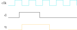

Construction
-- register with asynchronous reset and enable
reg : process (clk, rst)
begin
if rst = '1' then
q <= (others => '0');
elsif rising_edge(clk) then
if en = '1' then
q <= d;
end if; -- no else: keep the value, that is what a register does
end if;
end process;
-- counter modulo 10 with synchronous reset
cnt : process (clk)
begin
if rising_edge(clk) then
if rst = '1' or count = 9 then count <= 0;
else count <= count + 1;
end if;
end if;
end process;- The sensitivity list of a clocked process holds only
clkand asynchronous inputs (rst). - Every signal assigned under
rising_edgebecomes a flip-flop; logic before the assignment becomes combinational logic at its D input. - Asynchronous reset acts immediately; synchronous reset only at an edge (it is part of the D logic).
Flip-flop versus latch
| D latch | D flip-flop | |
|---|---|---|
| transparent | while the enable is high | never |
| captures | when the enable falls | at the clock edge |
| timing | hard to analyse (time borrowing) | setup and hold around one edge |
Synchronous design uses flip-flops only, all on one clock.
Picture

 at each rising edge of clk.
at each rising edge of clk.
q copies d only at the rising edges.
Intuition
A register is a camera: it takes a picture of its input at each clock edge and shows it until the next one.
Pitfall
Using a signal derived from logic as a clock (rising_edge(a and b)) creates gated clocks with skew and glitches; use an enable on the real clock instead (or proper clock gating cells).